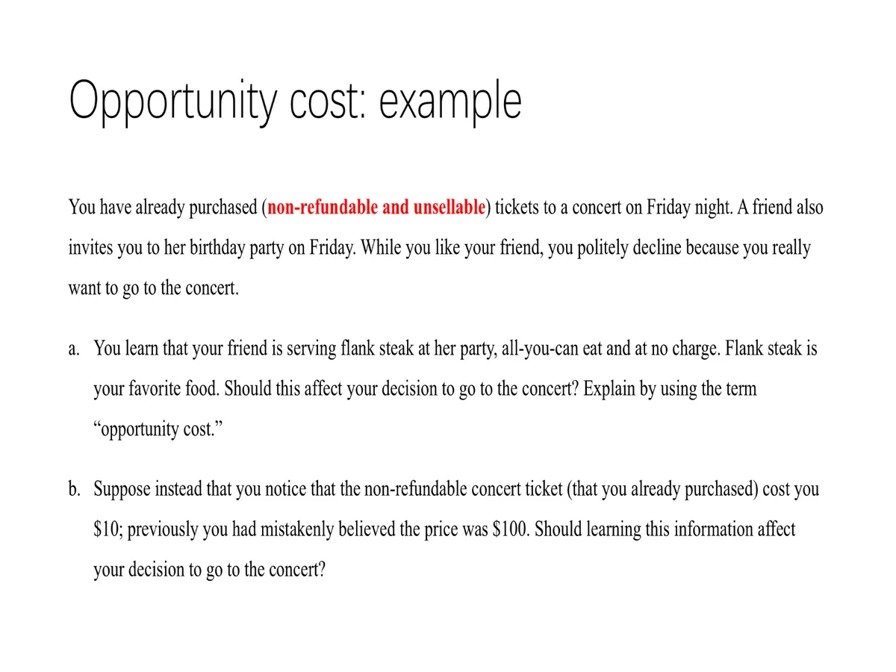
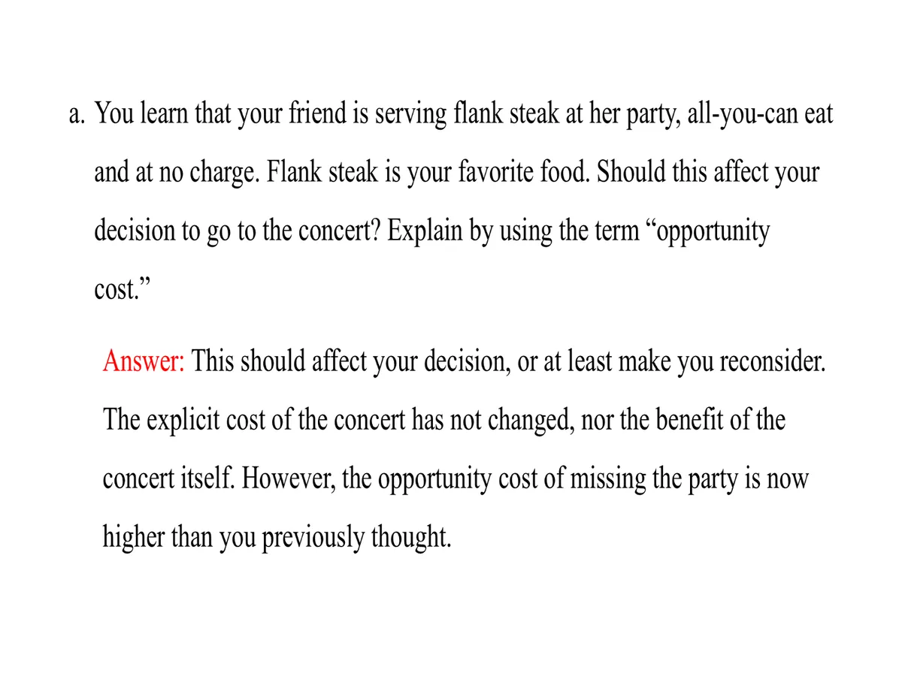
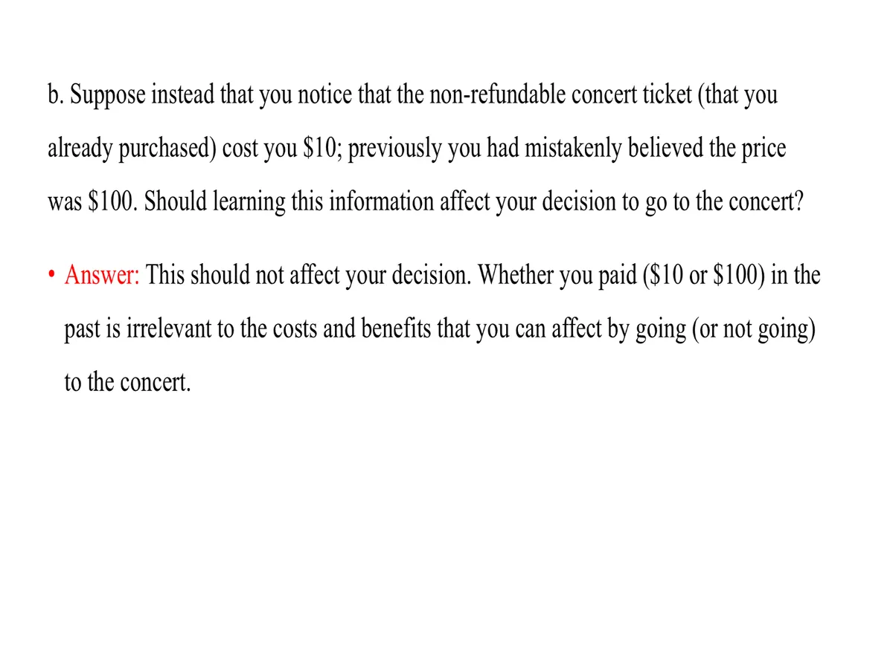
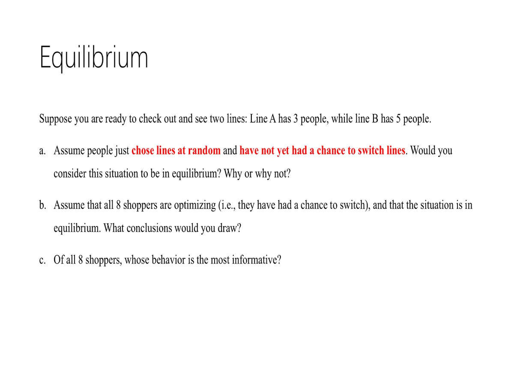
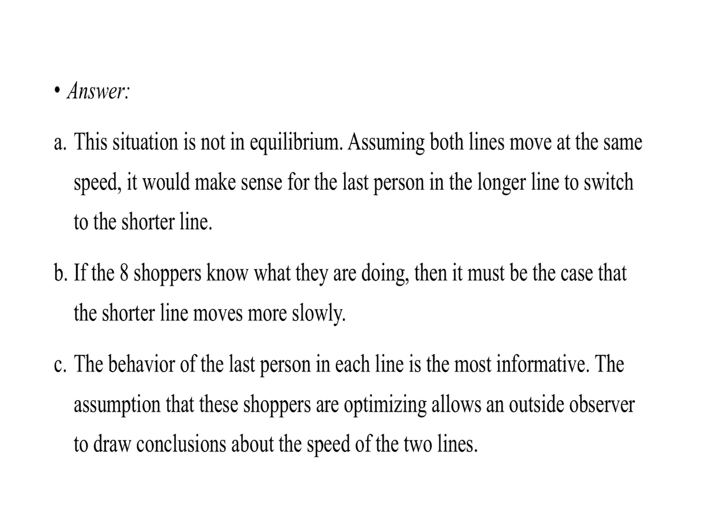

补充：机会成本与时间约束
用 5 小时时间预算把“取舍—机会成本—边际决策”算一遍，配套讲义里的补充算例。
本讲要点
- 时间预算约束
- 机会成本的货币化
- 边际思维

这一节是习题课式补充（supplement），只做两道题，但每道题都直击本讲两个最容易错的概念：机会成本与均衡。请先自己作答，再往下看。
题目一：你已经买好周五晚上音乐会的票（不能退、不能转卖）。同一天，朋友邀请你去她的生日派对。你更喜欢音乐会，于是礼貌地谢绝了。后来你听说派对上有无限量免费供应的侧腹牛排（flank steak）——那是你最爱吃的。这个信息是否应该改变你去音乐会的决定？请用「机会成本」这个概念解释。
幻灯片原文 / 板书
Opportunity cost: example --- You have already purchased (non-refundable and unsellable) tickets to a concert on Friday night. A friend also invites you to her birthday party on Friday. While you like your friend, you politely decline because you really want to go to the concert. You learn that your friend is serving flank steak at her party, all-you-can eat and at no charge. Flank steak is your favorite food. Should this affect your decision to go to the concert? Explain by using the term “opportunity cost.” Suppose instead that you notice that the non-refundable concert ticket (that you already purchased) cost you $10; previously you had mistakenly believed the price was $100. Should learning this information affect your decision to go to the concert?

答案：应该（至少值得重新考虑）。
推理链条要写清楚：
- 音乐会的显性成本没有变（票已经买了，不能退）。
- 音乐会本身的收益也没有变（你还是喜欢它）。
- 但错过派对的机会成本变高了——派对现在包含了你最爱的食物，而它正是你去音乐会时放弃掉的那个最佳替代。
所以正确的分析框架不是「票多少钱」，而是「去音乐会 = 放弃什么」。放弃的东西变值钱了，音乐会就相对变贵了。注意：说「应该」不等于「一定会改变」——如果音乐会对你仍然更好，你仍然去，但你是在更高的机会成本下选择了它。
幻灯片原文 / 板书
You learn that your friend is serving flank steak at her party, all-you-can eat and at no charge. Flank steak is your favorite food. Should this affect your decision to go to the concert? Explain by using the term “opportunity cost.” Answer: This should affect your decision, or at least make you reconsider. The explicit cost of the concert has not changed, nor the benefit of the concert itself. However, the opportunity cost of missing the party is now higher than you previously thought.

题目二（反向设问）：你后来发现，那张不可退的音乐会票其实只花了 10 美元，而你之前一直以为花了 100 美元。这个信息是否应该影响你的决定？
答案：不应该。
理由就是经济学最常被违反的一条原则：
沉没成本不是成本。（sunk cost is sunk）
无论你过去付了 10 美元还是 100 美元，都已经付了，无法改变。你此刻能影响的，只有「去」与「不去」这两种未来结果各自带来的成本与收益。已经发生的支出与这个决策无关。
对比两题：牛排改变的是未来的机会成本 → 有关；票价改变的是过去的支出 → 无关。一切决策只看边际上的（未来的）成本与收益。
幻灯片原文 / 板书
b. Suppose instead that you notice that the non-refundable concert ticket (that you already purchased) cost you $10; previously you had mistakenly believed the price was $100. Should learning this information affect your decision to go to the concert? Answer: This should not affect your decision. Whether you paid ($10 or $100) in the past is irrelevant to the costs and benefits that you can affect by going (or not going) to the concert.

题目三（回到均衡）：你在超市准备结账，看到两条队——A 队 3 人，B 队 5 人。
假设这些人都是随机选的队，还没机会换队。这个状态是均衡吗？为什么？
再假设：这 8 个人都在最优化（也就是说他们都有机会换队），并且这个状态确实是均衡。你能推出什么结论？在 8 个人里，谁的行为最有信息量？
幻灯片原文 / 板书
Equilibrium --- Suppose you are ready to check out and see two lines: Line A has 3 people, while line B has 5 people. Assume people just chose lines at random and have not yet had a chance to switch lines. Would you consider this situation to be in equilibrium? Why or why not? Assume that all 8 shoppers are optimizing (i.e., they have had a chance to switch), and that the situation is in equilibrium. What conclusions would you draw? Of all 8 shoppers, whose behavior is the most informative?

三段答案：
- 不是均衡。 如果两条队前进速度相同，B 队最后那个人换到 A 队会更省时间——有人可以通过单方面改变行为变好，所以失衡。
- 如果它是均衡，那么 A 队一定走得更慢。 因为人人都想缩短等待，既然队短的那条没人去，唯一解释就是它单位时间通过的人更少（比如收银员动作慢、顾客买得多）。
- 每条队最后一个人的行为最有信息量。 他在「换与不换」之间做选择，正好卡在边际上：他不换，说明两条队的预期等待时间已经相等。
这就是均衡假设的威力：你不需要问每个人怎么想，只要观察边际上那个人的行为，就能反推出他没说出口的信息。 这也是经济学家用「均衡」做实证推断的基本套路。
幻灯片原文 / 板书
Answer: This situation is not in equilibrium. Assuming both lines move at the same speed, it would make sense for the last person in the longer line to switch to the shorter line. If the 8 shoppers know what they are doing, then it must be the case that the shorter line moves more slowly. The behavior of the last person in each line is the most informative. The assumption that these shoppers are optimizing allows an outside observer to draw conclusions about the speed of the two lines.